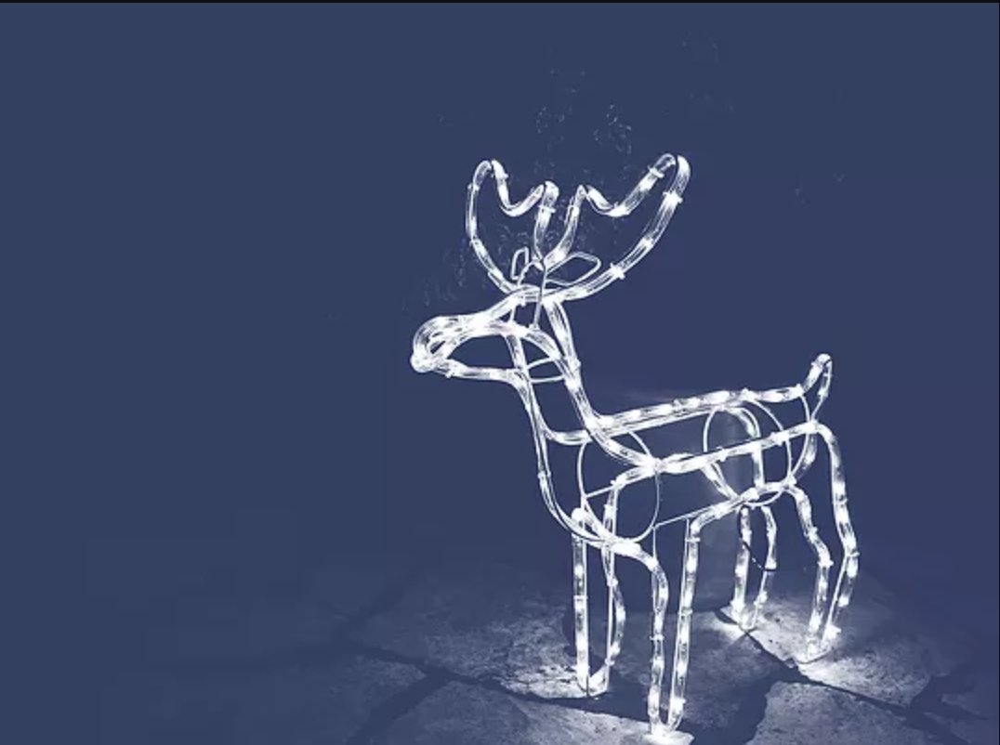

Это в городе тепло и сыро, а в сибирских лесах воздух свежий и морозный. Снег на склонах горнолыжного курорта Шерегеш лежит с ноября и ждет всех, кто не хочет встречать Новый год у телевизора. Если в первый день 2018 года встать пораньше, можно проложить путь в новую жизнь по нетронутому пухляку среди пушистых елок. Склоны Шерегеша ценят не только экстремалы. Даже если лыжи вы последний раз видели у бабушки на балконе, инструкторы помогут освоиться на самых легких трассах. Когда ноги попросят отдыха, хорошо покататься на тюбингах, попариться в русской бане или отправиться на снегоходах в Азасскую пещеру - говорят, возле нее можно встретить снежного человека.
Чтобы новогодняя вечеринка стала по-настоящему неземной, нужно устроить ее не на земле. Космический туризм все еще развит не настолько, чтобы попасть в нашу подборку, но у дайверов и космонавтов много общего. Для ночного погружения выбирайте Ко Док Май в Таиланде — остров-скалу в паре часов езды на катере от Пхукета. Ночью здесь особенно интересно любоваться кораллами в свете фонарика и высматривать притаившихся осьминогов и морских коньков. Хорошие условия для ночного дайвинга созданы и в арабском эмирате Фуджейра: богатый подводный мир, никаких опасных течений и множество дайвинг-школ, где можно нанять инструктора и взять снаряжение. А если вас не стесняют бюджет и время, отправляйтесь на Гавайи — любоваться гигантскими скатами-мантами под светом звезд.
Каждый хотя бы раз задумывался о том, чтобы все бросить и уйти в лес, не отвечать на телефонные звонки, а стороны света определять по положению звезд. Но не каждый ради этого готов терпеть тяготы зимнего похода. Специально для любителей комфорта в лапландских снегах построили комплекс Kakslauttanen Arctic Resort. Здесь можно снять теплое стеклянное иглу с прозрачной крышей и смотреть на северное сияние лежа под одеялом. Для тех, кто не боится холода, в отеле есть настоящие иглу из снега. Но даже в самые суровые морозы температура в них не опускается ниже -6 °C: гостям выдают пуховые спальники и обещают, что в таком доме сон будет крепким и здоровым. Когда вдоволь выспитесь, можно покататься в оленьей упряжке или начать Год Собаки с сафари на хаски, испытать удачу в подледной рыбалке или покататься на сноуборде — в 15 минутах езды находится горнолыжный центр Саариселькя.